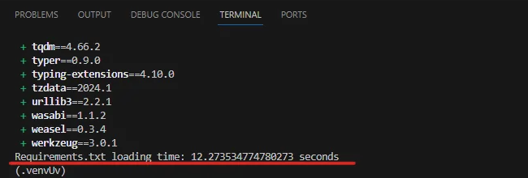
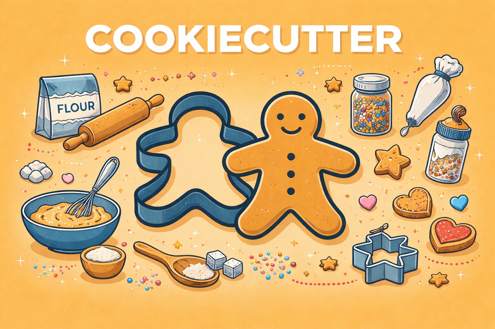

📘 Python Projects that teach by doing
Project to prove that using UV can help decrease pipeline deployment time.
Project Tools: Python, Unit Tests, DevOps
Project focused on improving productivity by generating standardized project structures using Cookiecutter.
Cookiecutter Streamlit Cookiecutter Python Tools: Python, Cookiecutter
Performance benchmarking project comparing different variable declaration strategies in Python.
Project{
Int results:
Function declaration: 0.01401954 seconds.
Literal declaration: 0.00408096 seconds.
Declaring Int using literals is faster by 70.89%.
}Tools: Python, Benchmarking
Educational project demonstrating common pitfalls with mutable default arguments in Python functions.
Project{
from typing import List
def add_to_list_mutable_default(item: str, list_items: List[str] = []) -> List[str]:
list_items.append(item)
return list_items
print("Mutable Default Argument")
print(add_to_list_mutable_default("banana")) # ['banana']
print(add_to_list_mutable_default("apple")) # ['banana', 'apple']
print("-" * 40)
}Tools: Python